<!DOCTYPE html>
<html lang="en">
<head>
<meta charset="UTF-8">
<meta name="viewport" content="width=device-width,initial-scale=1">
<title>4.2 Symmetry through transformations — Geometry</title>
<meta name="description" content="Class 7 Mathematics · Term 3 · Geometry · 4.2 Symmetry through transformations">
<link rel="icon" href="data:image/svg+xml,<svg xmlns='http://www.w3.org/2000/svg' viewBox='0 0 100 100'><text y='.9em' font-size='90'>📘</text></svg>">
<link rel="stylesheet" href="../../../assets/book.css">
<link rel="stylesheet" href="https://cdn.jsdelivr.net/npm/katex@0.16.11/dist/katex.min.css" crossorigin="anonymous">
</head>
<body>
<header class="topbar">
<div class="topbar-in">
  <div class="crumb">
    <span class="c1"><a href="../../../index.html">Library</a> · <a href="../../index.html">Class 7 Mathematics · Term 3</a></span>
    <span class="c2">Geometry · 4.2 Symmetry through transformations</span>
  </div>
  <a class="tb-btn" data-nav="prev" href="../../04-geometry/02-introduction-4.1/index.html" title="4.1 Introduction">←</a>
  <details class="drawer"><summary class="tb-btn" title="Sections in this chapter">☰</summary>
<div class="drawer-panel"><div class="dh">Geometry</div><a href="../01-chapter-opener/index.html">Chapter opener</a><a href="../02-introduction-4.1/index.html">4.1 Introduction</a><a href="../03-symmetry-through-transformations-4.2/index.html" aria-current="page">4.2 Symmetry through transformations</a><a href="../04-exercise-4.1/index.html">Exercise 4.1</a><a href="../05-construction-of-circles-and-concentric-circles-4.3/index.html">4.3 Construction of circles and concentric circles</a><a href="../06-exercise-4.2/index.html">Exercise 4.2</a><a href="../07-exercise-4.3/index.html">Exercise 4.3</a><a href="../08-summary/index.html">Summary</a><a href="../09-ict-corner/index.html">ICT Corner</a></div></details>
  <a class="tb-btn" data-nav="next" href="../../04-geometry/04-exercise-4.1/index.html" title="Exercise 4.1">→</a>
  <button class="tb-btn" data-theme-toggle title="Toggle light / dark" aria-label="Toggle light or dark theme">◐</button>
</div>
<div class="progress"><span style="width:61.0%"></span></div>
</header>
<main class="wrap">
<div class="sec-head">
  <p class="eyebrow"><a href="../index.html">Chapter 4 · Geometry</a></p>
  <h1>4.2 Symmetry through transformations</h1>
  <p class="sec-meta">Textbook pages 5–13 · 27 figures</p>
</div>
<article class="prose">
<p>We learnt the types of symmetry. Now we are going to learn symmetry of figures through transformations. Transformation describe how geometric figures of the same shape are related to one another. Figures or shapes in a plane can be translated, reflected or rotated to get new figures. The original figure is called the pre-image and the new figure is called the image. Pre-images are denoted by A, B, C … etc., and the images are denoted by A', B', C', … etc. A' can be read as A prime.</p>
<p>Leonardo da Vinci’s Vitruvian Man (ca. 1487) is often used as a representation of symmetry in the human body and, Pre-image \(- A\) Image - A΄ by extension, the natural universe.</p>
<p class="caption">Fig. 4.7</p>
<p>The operation that maps or moves the pre-image onto the image is called the transformation. A transformation is a specific set of rules that change the pre-image onto the image. In this chapter we are going to learn three types of transformation.</p>
<h3 id="s-4-2-1-translation">4.2.1. Translation:</h3>
<p>A translation is a transformation that moves all</p>
<figure class="fig side-fig">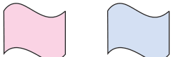</figure>
<aside class="sidenote"><p>The pre-image slides directly to right side</p></aside>
<p>points of a figure in the same distance in the same</p>
<p>direction. Pre-image image</p>
<p>Look at the Fig 4.8.</p>
<p>From these examples we can observe that all points of a figure move in the same distance and in the same direction. Using a grid paper, we can specify a translation image by how far the shape is moved horizontally and Fig. 4.8 then vertically. In horizontal, the right side movement is denoted by \(\to\) and the left side movement is denoted ←.</p>
<aside class="sidenote"><p>The pre-image slides to right and then down</p></aside>
<figure class="fig side-fig">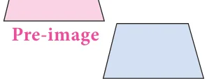</figure>
<p>In vertical, the upside movement is denoted ↑ and the downward movement is denoted ↓.</p>
<figure class="fig table-fig wide">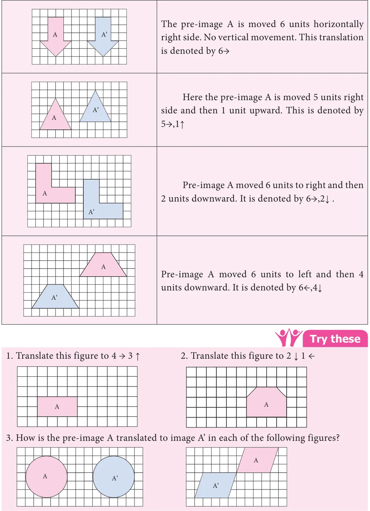</figure>
<h3 class="callout-h" id="s-think">Think</h3>
<p>The pre-image and the image after a translation coincide. What can you say about the translation?</p>
<h3 class="callout-h" id="s-activity">Activity</h3>
<p>Here is a letter grid. Start with Square A. From A move 5 units right then 2 units down and stop. Then move 3 units left then 2 units up and stop. What mathematical word you get? Start at square L. Move 3 units left and stop. Then move 1 unit left and 1 unit down and stop. Then move 3 units right then 2 unit up and stop. What mathematical word you get? Give instruction to get (i) Right (ii) Angle (iii) Work (iv) Hard</p>
<p>Example 4.1 Find the new position of each point using the translation given.</p>
<p>(i). 4 \(\to\) ↓ (ii). 6 ← 5 ↓ (iii). 6 \(\to 4\) ↑ (iv). 4 ← 4 ↓</p>
<figure class="fig wide">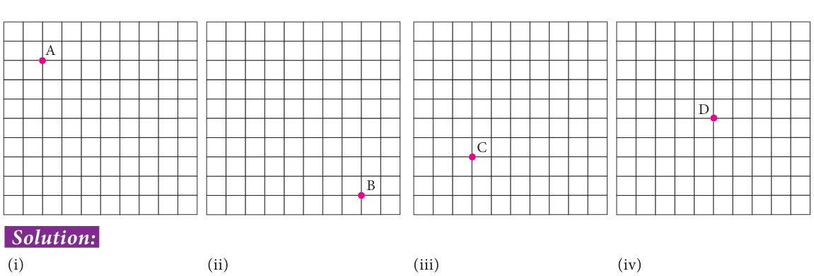</figure>
<figure class="fig wide">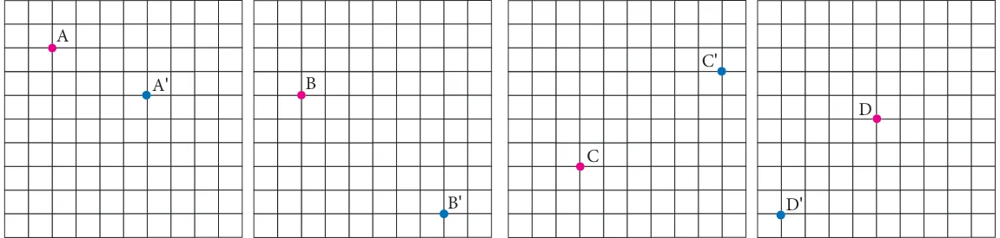</figure>
<p>Example 4.2 How is the pre-image translated to the image?</p>
<figure class="fig wide">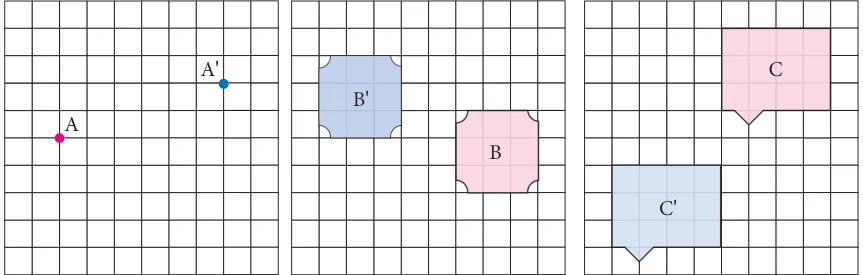</figure>
<h4 class="callout-h" id="s-solution">Solution:</h4>
<ul class="qlist">
<li><span class="mk">(i)</span><span class="lt">A is translated to A’ by \(6 \to\) ,2↑</span></li>
<li><span class="mk">(ii)</span><span class="lt">B is translated to B’ by 5←,2↑</span></li>
<li><span class="mk">(iii)</span><span class="lt">C is translated to C’ by 4←,5↓</span></li>
</ul>
<p>The sights and pageantry of marching band performance can add to the excitement of a sporting event. Band members dedicate a lot of time and energy to learning the music as well as the movements required for a performance. The movements of each band member as they progress throughout the show are examples of translations.</p>
<h3 id="s-4-2-2-reflection">4.2.2. Reflection</h3>
<p>A reflection is a transformation that “flips” or “reflects” a figure about a line. After a figure is reflected, it looks like a mirror image of itself. The line that a figure is flipped over is called a line of reflection.</p>
<p>We can observe reflection in water, a mirror or in a glossy surface as shown in Fig. 4.9.</p>
<figure class="fig wide">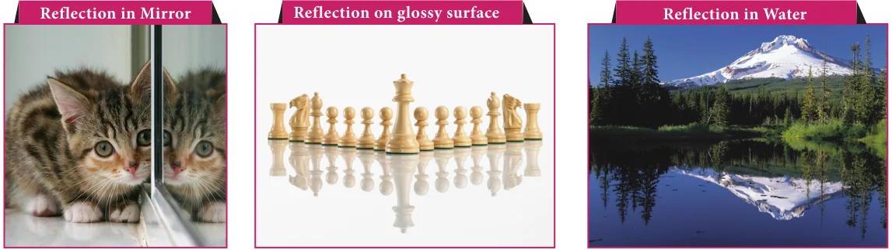<figcaption>Fig. 4.9</figcaption></figure>
<p>Observe the following pictures.</p>
<figure class="fig">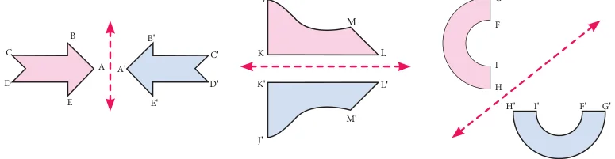<figcaption>Fig. 4.10</figcaption></figure>
<p>In the above pictures (Fig. 4.10), the figures are reflected by a line. This line is called a line of reflection. Here the red line is the line of reflection.</p>
<p>We can observe that the figures and its reflections are exactly the same distance from the line of reflection on both sides. The line of reflection may be horizontal or vertical or slanting and also it may be on the shape or outside the shape.</p>
<h4 class="callout-h" id="s-note">Note</h4>
<p>The line of reflection is the perpendicular bisector of the line joining at any point and its image</p>
<p>How to reflect a shape about a line?</p>
<p>To reflect the shape about the line of reflection, we have to reflect every vertex individually and then connect them again. First, choose one of the vertices and draw the line through this vertex so that it is perpendicular to the line of reflection. Now measure the distance from the vertex to the line of the reflection, and mark a point that has the same distance on the Fig. 4.11 other side. It can be done by using either a ruler or a compass. Repeat the process for all the other vertices of the shape. Finally connect all the reflected vertices in the correct order to get the reflection of the shape.</p>
<h3 class="callout-h" id="s-try-these">Try these</h3>
<ul class="qlist">
<li><span class="mk">1.</span><span class="lt">Draw the line of reflection in the 2. Reflect the shape with given line of</span></li>
</ul>
<p>following pictures. reflection.</p>
<p>Taj Mahal at Agra is planned by following the axis with Bilateral symmetrical design in plan and overall campus as the mirror image as shown in figure. The symmetry in architecture is implied by its axiality or centrality in the form of the building. The monumental architecture often uses symmetrical design i.e. mirrored, which show stability, balance and control.</p>
<p>Example 4.3 Reflect the shape in each of the following pictures with given line of reflection.</p>
<figure class="fig wide">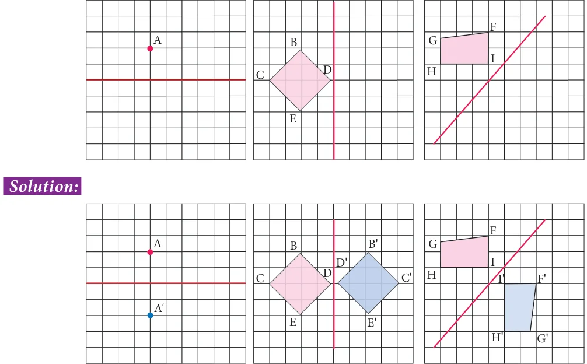</figure>
<p>Example 4.4 Reflect the letter about the red line.</p>
<figure class="fig">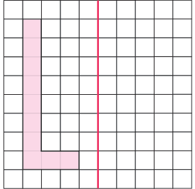</figure>
<h4 class="callout-h" id="s-solution">Solution:</h4>
<figure class="fig">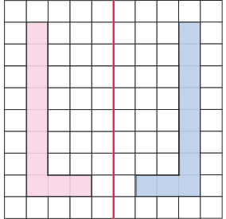</figure>
<h3 id="s-4-2-3-rotation">4.2.3. Rotation</h3>
<p>A rotation is a transformation that turns every point of the pre-image through a specified angle and direction about a point.</p>
<p>The fixed point is called the centre of rotation. The angle is called the angle of rotation. A rotation is also called a turn.</p>
<p>The default direction of a rotation is the anti-clockwise direction. The angle of rotation can be any value between 0 and 360 degrees, both are included. Rotation of \(360 ^{\circ}\) is called a full turn, rotation of \(180 ^{\circ}\) is called a half turn, rotation of \(90 ^{\circ}\) is called a quarter turn.</p>
<figure class="fig">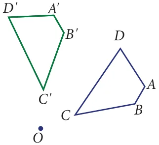</figure>
<figure class="fig">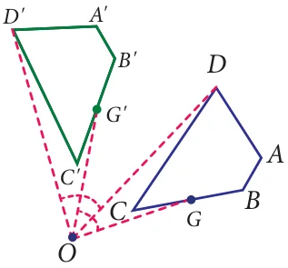<figcaption>Fig. 4.12</figcaption></figure>
<p>In Fig. 4.12 the preimage ABCD is rotated about the point O to get the image A'B'C'D'. Here the angles \(\angle\) AOA', \(\angle\) BOB', \(\angle\) COC', \(\angle\) DOD' are equal. Any point G on the preimage ABCD will have a corresponding image G' on A'B'C'D' such that \(\angle\) GOG' \(= \angle\) AOA' \(= \angle\) BOB' \(= \angle\) COC' \(= \angle\) DOD' which is the angle of rotation.</p>
<figure class="fig">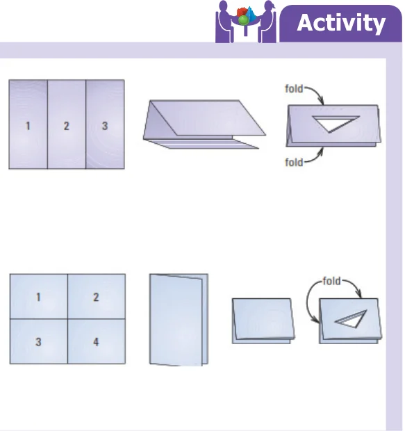</figure>
<p>●● Fold a piece of paper and lable it as shown. Cut scalene triangle out of the folded paper and unfold the paper. You can see triangles in all three parts How are the triangles in parts 2 and 3 are related to triangle in part 1? ●● Fold a piece of paper and lable it as shown. Cut scalene triangle out of the folded paper and unfold the paper. You can see triangles in all four parts. How are the triangles in part 2, part 3 and part 4 are related to triangle in part 1?</p>
<p>How to rotate a shape about a point?</p>
<p>To rotate a shape about a point with the given angle, we have to rotate every vertex individually and connect them again. Here ΔABC is rotated about O with angle of \(100 ^{\circ}\) . Step1. Draw CO. Make angle of \(100 ^{\circ}\) with vertex C and side CO using a protractor. Step2. Use a compass to construct C'O \(= CO\) Step3. Locate A' and B' in the similar way. Step4. Join A', B', C' to form ΔA'B'C'</p>
<figure class="fig side-fig"></figure>
<p>o100˚ o o A' o A' C C C' C C' C C' A B A B A B A B Fig. 4.13 Note</p>
<p>\(A 180 ^{\circ}\) clockwise rotation and \(a 180 ^{\circ}\) counter clockwise rotation have the same image. So, you do not need to specify direction when rotating a figure \(180 ^{\circ}\) . Example 4.5 Rotate the pink point about the green point by given angle of rotation and direction</p>
<ul class="qlist">
<li><span class="mk">(i)</span><span class="lt">90˚ counter clockwise (ii) 180˚</span></li>
</ul>
<figure class="fig">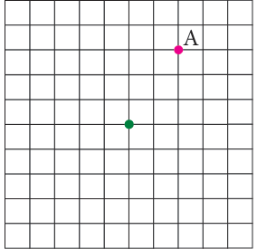</figure>
<figure class="fig">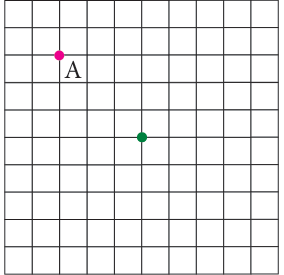</figure>
<h4 class="callout-h" id="s-solution">Solution:</h4>
<ul class="qlist">
<li><span class="mk">(i)</span><span class="lt">90˚ counter clockwise (ii) 180˚</span></li>
</ul>
<figure class="fig">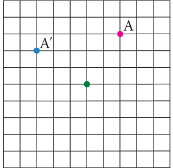</figure>
<figure class="fig">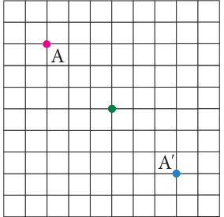</figure>
<p>Example 4.6 Rotate the pink shape about the green point by given angle of rotation and direction</p>
<ul class="qlist">
<li><span class="mk">(i)</span><span class="lt">180˚ (ii) 90˚ counter clockwise</span></li>
</ul>
<figure class="fig">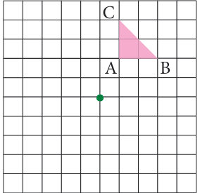</figure>
<figure class="fig">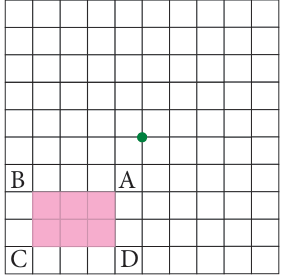</figure>
<h4 class="callout-h" id="s-solution">Solution:</h4>
<ul class="qlist">
<li><span class="mk">(i)</span><span class="lt">180˚ (ii) 90˚ counter clockwise</span></li>
</ul>
<figure class="fig">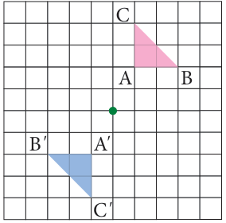</figure>
<figure class="fig">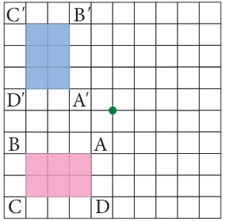</figure>
<p>Example 4.7 Describe the transformation involved in the following pair of figures. Write translation, reflection or rotation.</p>
<figure class="fig wide">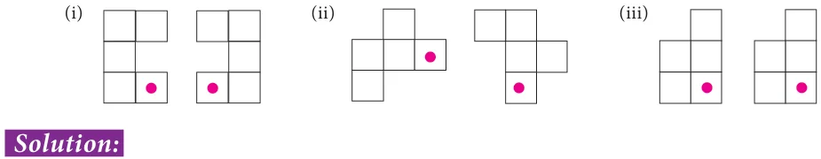</figure>
<ul class="qlist">
<li><span class="mk">(i)</span><span class="lt">Reflection (ii) Rotation (iii) Translation</span></li>
</ul>
<p>A glide reflection is a combination of two transformations: a reflection about a line and a translation. Here the translation is parallel to the line of reflection. Reversing the order of the composition will not affect the outcome. We can translate first and then reflect, or reflect first and then translate.</p>
</article>
<nav class="pager"><a class="" data-nav="prev" href="../../04-geometry/02-introduction-4.1/index.html"><span class="dir">← Previous</span><span class="t">4.1 Introduction</span><span class="ch">Geometry</span></a><a class="nx" data-nav="next" href="../../04-geometry/04-exercise-4.1/index.html"><span class="dir">Next →</span><span class="t">Exercise 4.1</span><span class="ch">Geometry</span></a></nav>
</main><footer class="site">Generated from the source textbook PDFs · text, figures and exercises belong to their respective publishers.</footer><script defer src="https://cdn.jsdelivr.net/npm/katex@0.16.11/dist/katex.min.js" crossorigin="anonymous"></script>
<script defer src="https://cdn.jsdelivr.net/npm/katex@0.16.11/dist/contrib/auto-render.min.js" crossorigin="anonymous"
  onload="renderMathInElement(document.body,{delimiters:[
    {left:'\\(',right:'\\)',display:false},
    {left:'$$',right:'$$',display:true},
    {left:'\\[',right:'\\]',display:true}],throwOnError:false,ignoredTags:['script','noscript','style','textarea','pre','code']})"></script>
<script src="../../../assets/book.js"></script>
<script defer src="../../../../assets/search.js?v=1789782769"></script>
<script defer src="../../../../assets/screenshot.js?v=2"></script>
</body>
</html>
